Assignment 2: Fee Collection & Reconciliation · Edumerge Solutions
A fee ledger for an Indian college: payments, a mock payment gateway, receipts, concessions, reversals and gateway settlement reconciliation, on an append-only ledger. With five AI assistants built on LangChain and LangGraph, none of which can move money.
Colleges collect fees through several channels at once: a cash counter, bank transfers, and online payments through a gateway that sometimes answers late or not at all. The hard part is not taking the money; it is being able to say, for any student on any day, exactly what they owe, what they paid, and where each rupee went, and proving it against the bank.
Kosha is a fee ledger that does that. An accountant opens a student's statement, records a payment and sees before submitting which installments it will clear. Online payments go through a mock gateway that can succeed, fail or time out. Every successful payment gets a sequential receipt. A daily settlement file from the gateway is uploaded and matched against what was recorded, and every mismatch has a resolution with a name and a note against it. Admins can apply concessions and reverse payments; nothing is ever edited or deleted.
An append-only ledger. Balances are the sum of ledger entries: demand, concession, payment and reversal. Database triggers reject UPDATE and DELETE on the ledger and on payment allocations. A reversal is a new positive entry, so the history of every account can always be read back, and a reversed payment reopens its installments without deleting anything.
Money rules live in the database, in one transaction. Each money-changing operation is a single PostgreSQL function that locks the student row, checks the rules, writes the payment, events, ledger entry, allocations, receipt number and audit line together, or nothing at all. Constraints and triggers enforce the same rules even if the API is bypassed. Idempotency keys stop double submits.
Reconciliation is a first-class flow, not a report. The gateway file is parsed and validated, matched by a pure, unit-tested function into four buckets, stored as a run, and each exception is resolved through a database function that records who resolved it and why. "Mark as paid" confirms the pending payment in the same transaction.
| User | What they need |
|---|---|
| Accountant | Record counter and bank payments quickly and correctly; know which installment a payment cleared; chase pending online payments; reconcile against the gateway every day. |
| Admin (bursar, principal's office) | Approve concessions, handle reversals (bounced transfers, chargebacks), see what is collected and what is overdue, answer audit questions. |
| Student or parent | See an honest statement, pay online, get a receipt, and know that a payment stuck at the gateway has not been lost. |
| Problem | What it looks like | How Kosha responds |
|---|---|---|
| Lost payments | A parent paid by UPI, the gateway timed out, and the college shows nothing. Or a transfer arrives with no record at the counter. | Timed-out payments stay pending with a gateway reference until check status or reconciliation settles them. |
| Double charges | A slow form is submitted twice; two receipts for one payment. | An idempotency key per form; the database returns the existing payment on a repeat. |
| Ambiguous pending states | "Did it go through?" Nobody knows, so it is recorded twice or not at all. | An explicit state machine; only SUCCESS touches the ledger. |
| Disputes | "I paid tuition, why does it say hostel is due?" | Allocation is a fixed, visible rule (oldest due date first), shown before submitting and on every receipt. |
| Silent corrections | Someone edits last month's entry to make totals match. | Append-only ledger; corrections are new entries with reasons. |
| Audit questions | "Who reversed this, and why?" | Every money function writes an audit line with actor, action and details. |
| Bank vs books | Gateway settles a different amount, or never settles a payment we marked paid. | Reconciliation buckets exceptions; mismatches are flagged, never auto-fixed. |
KSH/2026-27/000123). Gaps are possible if a transaction rolls back after taking a number; this is normal for database sequences and is noted.60 students across B.Tech CSE, BCA and B.Com, 408 installments (4 fee heads × 2 terms; hostel for about 40%), 66 payments over about 45 days, and 469 ledger entries. Seven named students each show one scenario: fully paid (Ananya Rao), partly paid (Rohan Kulkarni), overdue with nothing paid (Vikram Singh), merit concession (Priya Nair), a returned bank transfer that was reversed (Arjun Mehta), a UPI payment stuck in pending (Sneha Iyer), and an advance from overpaying (Karthik Reddy). All history after the fee demand is written through the same database functions the app uses.
%%{init: {"flowchart": {"rankSpacing": 30, "nodeSpacing": 26, "wrappingWidth": 420}, "themeVariables": {"fontSize": "16px"}}}%%
flowchart TB
subgraph B["Browser"]
UI["Pages and drawers
(React, Radix)"]
end
subgraph V["Next.js on Vercel"]
RSC["Server components
read models"]
API["Route handlers
zod · role checks · one error shape"]
DOM["Domain layer (pure TS)
reconcile · allocation preview
payment-state · permissions"]
AI["AI layer (LangGraph)
read-only tools · verifiers"]
end
OAI["OpenAI API"]
subgraph S["Supabase Postgres"]
FN["Money functions (plpgsql)
record · confirm · fail · reverse
concession · reconcile · reset"]
TB["Tables
append-only ledger"]
VW["Views
balances · installment status"]
TR["Triggers and constraints
no update/delete · legal transitions"]
end
UI -- "fetch JSON" --> API
UI -- "navigate" --> RSC
API --> DOM
API --> AI
AI <--> OAI
AI -- "select" --> VW
API -- "supabase.rpc (one transaction)" --> FN
RSC -- "select" --> VW
FN --> TB
TR -. "guards" .-> TB
VW --> TB
classDef sys fill:#F4F7FD,stroke:#C9D5F2,color:#16213A
classDef db fill:#F1F8F5,stroke:#B9DCCB,color:#16213A
class UI,RSC,API,DOM,AI sys
classDef ext fill:#FBF6EC,stroke:#E6D3A8,color:#16213A
class OAI ext
class FN,TB,VW,TR db
OPENAI_API_KEY for the AI features.| Layer | Responsibility |
|---|---|
| Database functions | Every money rule: locking, idempotency, allocation, receipts, ledger, audit. The source of truth. |
| Constraints and triggers | Defence in depth: append-only tables, legal transitions, sign of ledger amounts, one ledger entry per source row, allocations can only point at the same student's installments. |
| Grants | The API's service role may read tables and execute the public functions, nothing else. Even a leaked key cannot UPDATE the ledger. |
| Route handlers | zod validation, the permission matrix, ownership checks for the student role, mapping database errors to readable messages. |
| AI layer (section 12) | LangGraph agents with read-only tools, and verifiers that check every figure and reference before anything is shown. Proposals only; acting on one goes through the database functions above. |
| Domain layer (pure TS) | Reconciliation matching, allocation preview, statement building, audit sentences, the state machine for the UI. All unit tested. |
erDiagram
courses ||--o{ students : enrols
students ||--o{ installments : "is billed"
fee_heads ||--o{ installments : "classifies"
installments ||--o{ concessions : "reduced by"
students ||--o{ payments : makes
payments ||--o{ payment_events : "moves through"
payments ||--o{ payment_allocations : "splits into"
installments ||--o{ payment_allocations : "is paid by"
students ||--o{ ledger_entries : "has"
payment_transitions }o--o{ payments : "allows"
payments |o--o| mock_gateway_txns : "gateway view"
reconciliation_runs ||--o{ reconciliation_items : contains
payments |o--o{ reconciliation_items : "matched to"
students { uuid id PK
text roll_no UK
uuid course_id FK }
installments { uuid id PK
uuid student_id FK
uuid fee_head_id FK
smallint term
bigint amount_paise
date due_date }
concessions { uuid id PK
uuid installment_id FK
bigint amount_paise
text reason
text approved_by }
payments { uuid id PK
uuid student_id FK
bigint amount_paise
text mode
text status
text gateway_ref UK
uuid idempotency_key UK
text receipt_no UK }
payment_allocations { uuid id PK
uuid payment_id FK
uuid installment_id FK
bigint amount_paise }
ledger_entries { bigint id PK
uuid student_id FK
text type
bigint amount_paise
uuid ref_id }
reconciliation_items { uuid id PK
uuid run_id FK
text bucket
text gateway_ref
text resolution }
audit_log { bigint id PK
text actor
text action
jsonb details }
audit_log refers to records by entity and id rather than a foreign key, so it can describe any table.Floating-point numbers cannot represent most decimal fractions exactly: 0.1 + 0.2 is not 0.3. A fee system adds, splits and compares amounts constantly, and a one-paisa drift is a reconciliation exception. Every amount is therefore an integer number of paise: BIGINT in Postgres and a safe integer in TypeScript. Rupees appear only when formatting for display (formatINR) and parsing user input (toPaise, which rejects more than two decimals and never goes through floating point).
A balance that can be edited cannot be trusted or explained. In Kosha the balance is the sum of ledger entries, each of which points at the row that caused it: a DEMAND at an installment, a CONCESSION at a concession, a PAYMENT and possibly a REVERSAL at a payment. Triggers reject UPDATE and DELETE, a check constraint forces the sign to match the type, and a unique index allows at most one entry of each type per source row, which is what makes "confirm twice" harmless. The verification script cross-checks the ledger against balances computed independently from the domain tables.
stateDiagram-v2 direction TB [*] --> INITIATED INITIATED --> PENDING: sent to gateway INITIATED --> SUCCESS: cash / bank transfer PENDING --> SUCCESS: gateway confirms,
check status,
reconciliation PENDING --> FAILED: declined /
marked failed SUCCESS --> REVERSED: admin, with reason FAILED --> [*] REVERSED --> [*] classDef ok fill:#F1F8F5,stroke:#B9DCCB,color:#16213A classDef wait fill:#FBF6EC,stroke:#E6D3A8,color:#16213A classDef bad fill:#FCF1F0,stroke:#EBC4C0,color:#16213A class SUCCESS ok class PENDING wait class FAILED bad
sequenceDiagram autonumber participant U as Accountant (drawer) participant A as POST /api/payments participant F as record_payment() participant D as Postgres tables U->>A: amount, mode, idempotency key A->>A: zod validation, role check A->>F: supabase.rpc (one transaction) F->>D: SELECT student FOR UPDATE (lock) F->>D: key already used? return existing payment F->>D: INSERT payment INITIATED, event F->>D: SUCCESS: receipt no. from sequence F->>D: INSERT ledger PAYMENT (−amount) F->>D: allocate oldest due first F->>D: INSERT audit_log F-->>A: payment (COMMIT) A-->>U: 201, toast, row flashes
Idempotency. Each opening of the payment drawer creates a UUID; the column is UNIQUE and is checked after the student lock, so double clicks, retries and parallel submits yield one payment (repeats get it back with HTTP 200). A reused key with a different amount is refused.
Locking. Every money function locks the student row first, then the payment, then the reconciliation item (a fixed order avoids deadlocks), so two payments for one student cannot allocate the same rupee twice.
Allocation. After any success or reversal, unallocated money is applied to open installments, oldest due date first. "Paid" counts only allocations of payments that are currently SUCCESS, so a reversal reopens installments without deleting rows; the rest is an advance.
flowchart TD
U["Upload settlement CSV"] --> V{"Header and rows valid?"}
V -- "missing columns" --> X["File rejected,
columns named"]
V -- "bad or duplicate rows" --> SA["Rows set aside
with line and reason"]
V -- "valid rows" --> M{"Match on gateway_ref"}
M -- "amounts differ" --> B2["Amount mismatch"]
M -- "ours SUCCESS" --> B1["Matched"]
M -- "ours PENDING" --> B3["Settled but
pending here"]
M -- "unknown / ours FAILED" --> SA
W["Our SUCCESS in the T+1
window, not in the file"] --> B4["Missing in
settlement"]
B3 -- "Mark as paid" --> C["confirm_payment()
receipt, ledger, allocation"]
B2 -- "Reviewed + note" --> N["Resolution recorded
with who and when"]
B4 -- "Reviewed + note" --> N
classDef ok fill:#F1F8F5,stroke:#B9DCCB,color:#16213A
classDef wait fill:#FBF6EC,stroke:#E6D3A8,color:#16213A
classDef bad fill:#FCF1F0,stroke:#EBC4C0,color:#16213A
classDef sys fill:#F4F7FD,stroke:#C9D5F2,color:#16213A
class B1,C ok
class B3 wait
class B2,B4,X,SA bad
class U,V,M,W,N sys
The sample (public/samples/settlement_sample.csv, 36 rows) was generated from the seed with deliberate discrepancies. Against a fresh reset:
| Bucket | Rule | Example from the sample | Resolution |
|---|---|---|---|
| Matched (33) | Reference and amount agree; we have it as SUCCESS (or later reversed). | MGW7300000002, Rohan Kulkarni, ₹82,500. | None needed. |
| Amount mismatch (1) | Reference found, amounts differ. Takes precedence over status. | MGW7300000023, Lakshmi Narayanan: file ₹62,000, recorded ₹62,500 (short capture). | Mark reviewed with a note. Never auto-corrected. |
| Settled but pending here (2) | The gateway settled it; we still have it PENDING. | MGW7300000005, Sneha Iyer, ₹86,500 (timed out 21 Sep); MGW7300000008, ₹76,000. | Mark as paid: confirms the payment in one transaction. |
| Recorded here, missing in settlement (1) | Our online SUCCESS inside the file's settlement window, absent from the file. | MGW7300000039, Sowmya Raghavan, ₹40,000 (paid 10 Aug). | Mark reviewed after asking the gateway. |
Rows that fit no bucket are listed as "set aside" with the file line and a reason (malformed, duplicate, non-settlement status, unknown reference, or settled but failed here). Each run stores its totals, rejected rows and a file hash, so a repeated upload is flagged.
| Decision | Alternative considered | Why this choice | Cost |
|---|---|---|---|
| Money rules in plpgsql functions | Business logic in TypeScript with a transaction client | One round trip, one transaction, row locks and constraints right next to the data; works through supabase-js without a connection pool of our own. | Two languages; SQL is harder to unit test (covered by integration tests). |
| Append-only ledger enforced by triggers | Mutable balance column on students | History is always explainable; corrections are visible; balance can be cross-checked. | Reports must sum; reversals need linking in the UI. |
| Integer paise | numeric rupees | Exact arithmetic in both SQL and TypeScript; no rounding rules to agree on. | Formatting and parsing at every edge. |
| "Paid" derived from allocations of SUCCESS payments | Delete or negate allocations on reversal | Reversal reopens installments without touching allocation rows; one query answers "what did this payment pay". | Slightly more complex views. |
| Automatic re-allocation of advance | Manual "apply advance" action | A student never has both spare credit and an open installment (checked by the verification script). | An old receipt can gain a line when an advance is applied later. |
| Reconciliation matching in pure TypeScript | Matching in SQL | Easy to unit test every edge case (39 tests); readable rules. | The system payments are loaded into memory (fine at this scale). |
| Service role limited by grants | Full service-role access | A leaked key or a bug in a route cannot write the ledger directly. | Every write needs a function. |
| Simulated roles via a cookie | Supabase Auth | Out of scope for the assignment; the permission matrix is where real auth would plug in. | Not secure for real use; stated as an assumption. |
| Fixed demo calendar | Seed relative to today | Gateway refs, receipts and the static sample CSV always line up after a reset. | The 30-day trend thins out if viewed long after 24 Sep 2026. |
| Server components read, routes write | Client-side data fetching everywhere | Statements render fully on the server; after a change the page re-renders from the database, the single source of truth. | A full refresh of the page data after each action. |
| Case | Handling | Proved by |
|---|---|---|
| Double submit | Idempotency key per form open (UNIQUE), checked after the student lock; repeats return the same payment. Submit button disabled while in flight. | Integration (serial and 3 in parallel) |
| Partial payment | Allocated oldest due first; the last installment it touches is partly paid. The preview says "part of … ; ₹X will still be due". | Unit, E2E, seed (Rohan) |
| Overpayment | Never rejected; the remainder is an advance (negative balance), shown as "Advance", used when anything reopens. | Unit, seed (Karthik) |
| Concession after partial payment | Capped at demand − concessions − paid for that installment; checked in the form, zod and the database. | Integration |
| Reversal of an allocated payment | REVERSAL entry; allocations stop counting; installments reopen; spare advance re-applied. Second reversal refused. | Integration, E2E |
| Stuck pending | Shown on the statement and dashboard; resolved by check status, reconciliation "mark as paid", or "mark as failed" with a reason. | Integration, E2E |
| Confirm racing itself | Row lock plus one-entry-per-source unique index: exactly one confirm succeeds, the other gets "already marked as paid". | Integration |
| Amount mismatch | Own bucket; both amounts and the difference shown; only "reviewed with a note" is allowed. | Unit, manual |
| Duplicate refs in the CSV | Identical copies counted once (others listed as duplicates); copies with different amounts all set aside, because nobody can know which is right. | Unit |
| Malformed CSV rows | Missing columns reject the file; bad rows (wrong field count, bad amount, date or status) are set aside with the line number; blank lines ignored; BOM and CRLF handled. | Unit |
| Same file uploaded twice | New run, flagged with a link to the earlier run; the dashboard lists each open item once; resolving an already-confirmed payment is harmless. | Manual |
| Parallel payments | Student row lock serialises them; allocations never exceed demand. | Integration (6 in parallel) |
| Illegal state transitions | Trigger checks every status change against payment_transitions; functions give specific messages first. | Unit (all 25 pairs), verify script |
| Zero or negative amounts | Rejected by toPaise, zod and CHECK constraints (amount_paise > 0). | Unit, integration |
| Wrong role | UI hides the action; the API answers 403 with the role named; SQL functions check the actor again for reverse, concession and student payments. | Unit (matrix), E2E |
Input is validated three times with the same rules: in the form (inline messages), by zod at the route handler (422 with the field name), and in the database by the function and by CHECK constraints. Database errors carry a machine code in the Postgres HINT, which the API maps to an HTTP status and a readable message ("This payment was already reversed.").
| Suite | Tests | Covers |
|---|---|---|
| Unit (Vitest) | 192 | AI verifiers (made-up figures, unknown evidence, forbidden actions, undisclosed duplicates, message language, script and gender), date periods, the settlement-file converter and its sampling, daily-brief signals and review; Payment state machine, every legal and illegal pair, and that the TypeScript table equals the SQL one; reconciliation bucketing, duplicate refs, bad rows, amount formats, T+1 window, CSV parsing (BOM, CRLF, quoted amounts, field counts); toPaise, formatINR, amount in words; allocation preview; statement builder; permission matrix; dates in IST; error mapping. |
| Integration (Vitest, real database) | 13 | Same idempotency key twice and three times in parallel; key reuse with another amount; timeout then confirm writes exactly one ledger entry; confirm racing itself; failed payment writes nothing; reversal reopens the installment; double reversal and non-admin reversal refused; concession above remaining refused, exactly remaining accepted; six parallel payments allocate correctly; the API role cannot write the ledger; the verification script passes afterwards. |
| End to end (Playwright) | 3 | Record a cash payment (prefill, preview, validation, receipt, balance and row update); an online payment times out and a settlement file resolves it through "mark as paid"; an admin reverses a payment and the installment reopens, an accountant has no such action, a second reversal returns 409. |
| AI evaluations (real model) | 21 | Copilot 4, Ask Kosha 8, smart import 2, parent messages 4, daily brief 3; right answers computed independently from the database (section 12.6). |
| Ledger verification (SQL) | 9 | Balance = SUM(ledger) for every student; allocations + concessions ≤ demand; allocations ≤ payment; ledger entries match payment status; one DEMAND per installment; no spare credit next to an open installment; last event matches status; ledger rejects UPDATE and DELETE; FAILED → SUCCESS rejected. |
| Command | Result |
|---|---|
npm run typecheck · npm run lint | No errors, no warnings |
npm run test:unit | Test files 11 passed · Tests 192 passed |
npm run eval:ai | 21 passed: Copilot 4/4 · Ask Kosha 8/8 · import and messages 6/6 · brief 3/3 |
npm run e2e | 3 passed (1.3 min) |
npm run db:reset | All nine ledger checks passed (2.7 s) |
npm run build | Compiled successfully |
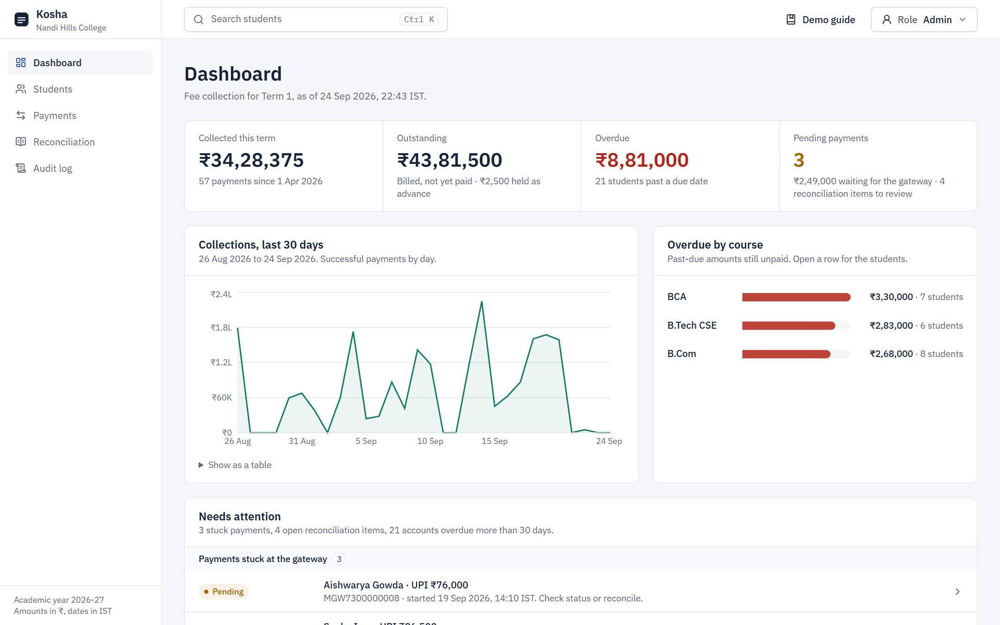
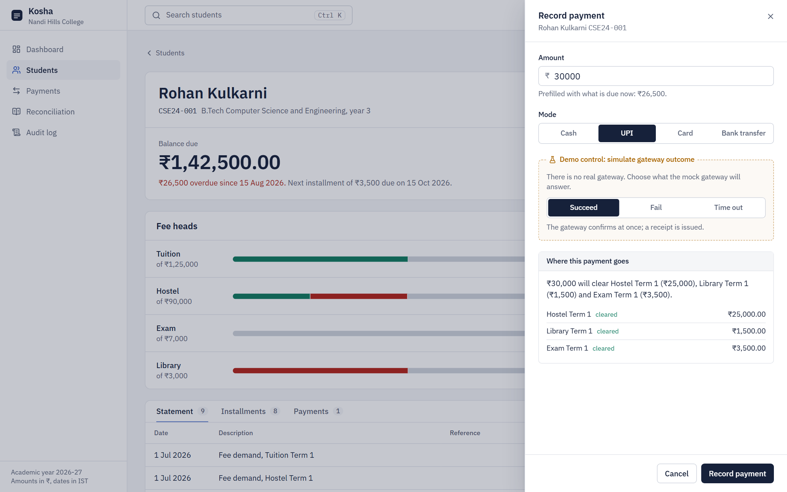
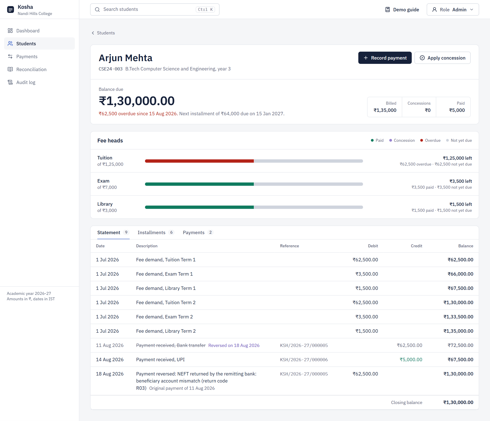
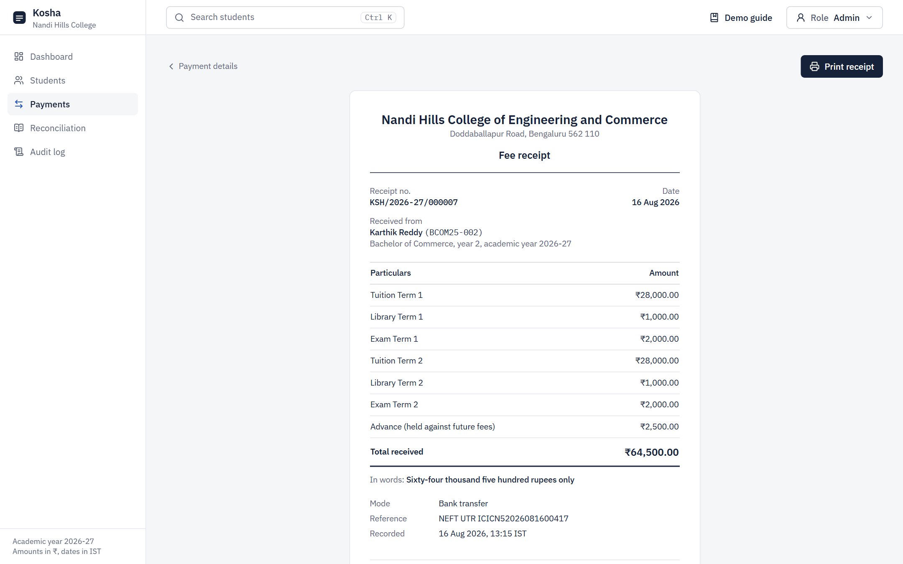
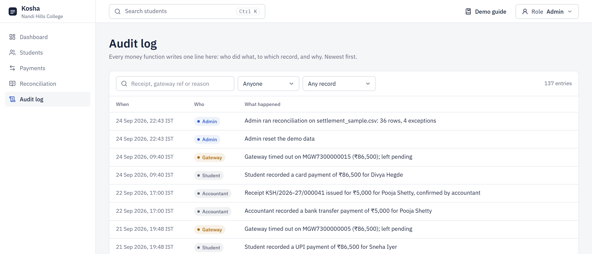
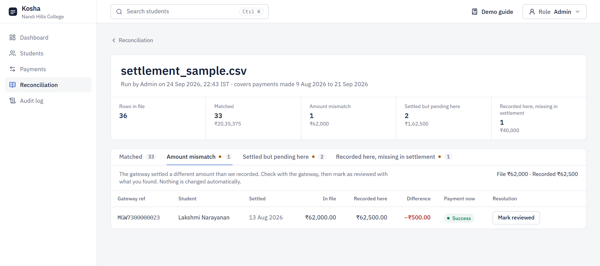
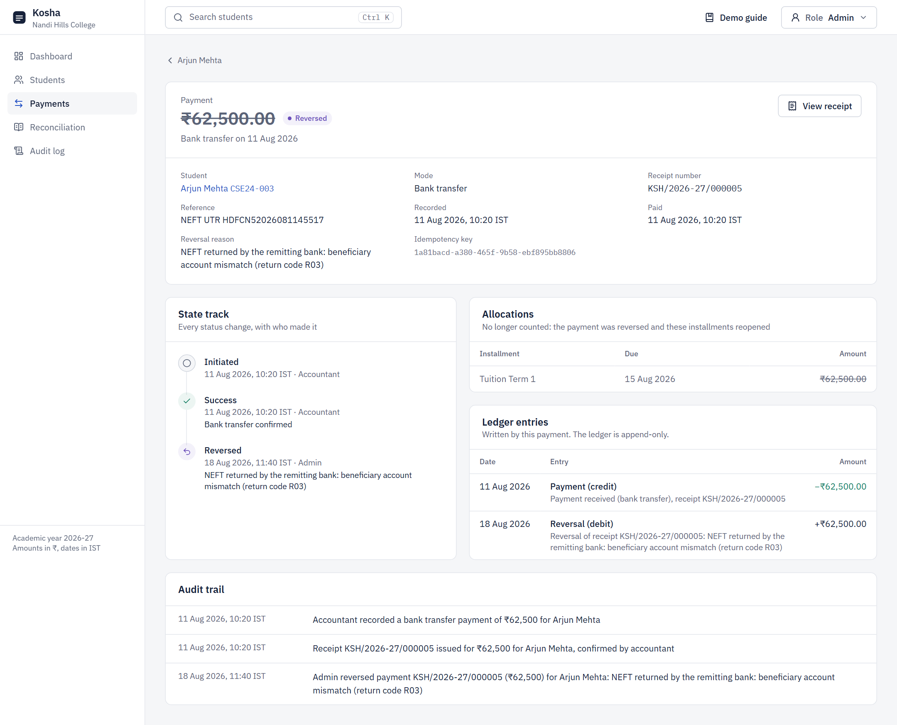
Kosha has five AI features, built with OpenAI (gpt-4.1-mini) through LangChain and LangGraph. They are designed around one rule: the AI never moves money. It reads, investigates, explains and drafts; a person decides, and every decision goes through the same locked, audited database functions as the rest of the app.
| Feature | What it does for the accounts office | Where |
|---|---|---|
| Reconciliation Copilot | Investigates each reconciliation exception (gateway record, payment history, duplicate payments, the file, other files) and proposes a resolution with evidence, a ready note and, when needed, a drafted message to the gateway. | Reconciliation run: Investigate, Investigate all |
| Ask Kosha | Answers questions about the fees in plain English ("Which BCA students are overdue by more than 30 days?"), with a linked table and follow-ups. | Top bar on every page, or Ctrl+J |
| Smart settlement import | Maps a settlement file in a gateway's own layout to Kosha's four columns, with a preview the accountant confirms. | Reconciliation upload |
| Messages to parents | Drafts reminders, overdue notices, balance explanations and payment confirmations in English, Kannada or Hindi, for WhatsApp or email. | Student page: Message parent |
| Daily finance brief | Opens the dashboard with the three things that most need attention today, each with the reason and a button to act. | Dashboard |
%%{init: {"flowchart": {"rankSpacing": 26, "nodeSpacing": 24, "wrappingWidth": 420, "padding": 8}, "themeVariables": {"fontSize": "17px"}}}%%
flowchart TB
UIX["Browser
Copilot · Ask · Import · Message · Brief"]
subgraph N["Next.js route handlers · server only"]
AG["LangGraph graph
agent loop, structured output"]
TL["Read-only tools
typed queries"]
VF["Verifier (pure TS)
figures · evidence · rules"]
end
OAI["OpenAI API
gpt-4.1-mini"]
RD["Postgres tables and views
SELECT only"]
FN["SQL functions
resolve · save · audit"]
UIX -- "request, streamed steps back" --> AG
AG <--> OAI
AG --> TL --> RD
AG --> VF
UIX -- "a person accepts" --> FN
classDef sys fill:#F4F7FD,stroke:#C9D5F2,color:#16213A
classDef ok fill:#F1F8F5,stroke:#B9DCCB,color:#16213A
classDef wait fill:#FBF6EC,stroke:#E6D3A8,color:#16213A
classDef ext fill:#FBF6EC,stroke:#E6D3A8,color:#16213A
class UIX,AG,TL,VF sys
class RD,FN ok
class OAI ext
Language models are good at reading messy situations and writing clearly, and unreliable at arithmetic, at quoting figures exactly and at following rules every time. Each feature is therefore split so that code owns the facts and the rules, and the model owns the judgement and the words. Then code checks the model's work before anyone sees it.
%%{init: {"flowchart": {"rankSpacing": 26, "nodeSpacing": 24, "wrappingWidth": 420, "padding": 8}, "themeVariables": {"fontSize": "17px"}}}%%
flowchart TB
G["1 · Gather
code or read-only tools fetch the facts"] --> P["2 · Propose
the model writes structured output"]
P --> V["3 · Verify in code
figures · references · rules"]
V -- "fails once" --> P
V -- "passes" --> H["4 · A person decides
accept · edit · dismiss"]
V -- "fails again" --> D["Downgrade or fall back"] --> H
H --> DB["5 · SQL function
one transaction + audit"]
classDef sys fill:#F4F7FD,stroke:#C9D5F2,color:#16213A
classDef ok fill:#F1F8F5,stroke:#B9DCCB,color:#16213A
classDef wait fill:#FBF6EC,stroke:#E6D3A8,color:#16213A
classDef ext fill:#FBF6EC,stroke:#E6D3A8,color:#16213A
class G,P sys
class V,D wait
class H,DB ok
| Control | How it is enforced |
|---|---|
| No money moves without a person | Tools are read-only queries. Accepting a Copilot suggestion runs decide_ai_investigation(), which calls resolve_recon_item() in the same transaction; escalations cannot be accepted at all. |
| Every figure is real | A shared checker extracts every ₹ amount from the model's text and table cells; each must be one a tool returned (or the user typed). Totals, differences, percentages and date ranges are computed in code, not by the model. |
| Every claim has a source | Tools register evidence ids (gateway:MGW…, student:CSE24-001, check:duplicates); findings, table rows and sources must cite ids that exist, and the UI turns them into links. |
| Rules the model must follow | Allowed actions per bucket and payment status; a possible duplicate payment must be disclosed; actions in the brief must belong to their signal; messages must be in the chosen script, use ₹ digits and assume no gender. |
| Least data to OpenAI | Smart import sends only the header and at most 25 sample rows. Messages send the facts for one student. The key never reaches the browser bundle (checked after every build). |
| Auditable | Investigations, accept and dismiss decisions, drafted messages and briefs are stored or written to the audit log with who, when and which model. |
| Works without AI | With no OPENAI_API_KEY the AI buttons are hidden, and the daily brief is written by rules. Nothing else changes. |
Problem. A reconciliation run leaves exceptions: amounts that differ, money the gateway settled that is still pending here, payments recorded here but missing from the file. Each one takes an accountant several screens and a judgement call.
What it does. Investigate on an exception, or Investigate all for the run, streams the agent's steps live ("Asking the gateway about MGW7300000005", "Checking for a second payment of the same amount") and ends with a diagnosis: a headline, the root cause, a confidence, numbered findings linked to their records, the suggested action with an editable note, and for shortfalls a ready message to the gateway's support desk.
%%{init: {"flowchart": {"rankSpacing": 26, "nodeSpacing": 24, "wrappingWidth": 420, "padding": 8}, "themeVariables": {"fontSize": "17px"}}}%%
flowchart TB
I["investigate
the model chooses tools, max 5 rounds"] <--> T["read-only tools
gateway record · payment timeline · student account
duplicate check · search this file · other runs"]
I --> D["diagnose
structured output"]
D --> V["verify
action allowed · figures in evidence
ids exist · duplicate disclosed"]
V -- "fails once" --> D
V -- "fails again" --> X["ESCALATE, low confidence"]
V -- "passes" --> E["saved as a proposal"]
X --> E
E --> H["accountant: accept · edit note · dismiss"]
H -- "accept" --> F["decide_ai_investigation()
→ resolve_recon_item()"]
classDef sys fill:#F4F7FD,stroke:#C9D5F2,color:#16213A
classDef ok fill:#F1F8F5,stroke:#B9DCCB,color:#16213A
classDef wait fill:#FBF6EC,stroke:#E6D3A8,color:#16213A
classDef ext fill:#FBF6EC,stroke:#E6D3A8,color:#16213A
class I,T,D sys
class V,X wait
class E,H,F ok
| Case in the sample file | What the Copilot finds | Suggestion |
|---|---|---|
| Settled but pending here: Sneha Iyer, MGW7300000005, ₹86,500 | The gateway's record says SUCCESS for ₹86,500; no second payment of the same amount. The UPI call timed out before the gateway confirmed. | Mark as paid (high) |
| Amount mismatch: MGW7300000023, file ₹62,000, recorded ₹62,500 | The gateway captured ₹62,500 but settled ₹500 less. Drafts: "…the settlement file dated 13 Aug 2026 shows only ₹62,000 settled. Please clarify the reason for the ₹500 shortfall." | Escalate |
| Missing in settlement: MGW7300000039, ₹40,000 | The gateway says SUCCESS; not in this file, not under a mistyped reference with the same amount, not in any other file. | Escalate |
| Staged in the eval: pending, and the parent then paid the same amount at the counter | Finds the second payment; marking the first as paid would count the money twice. | Escalate: possible duplicate |
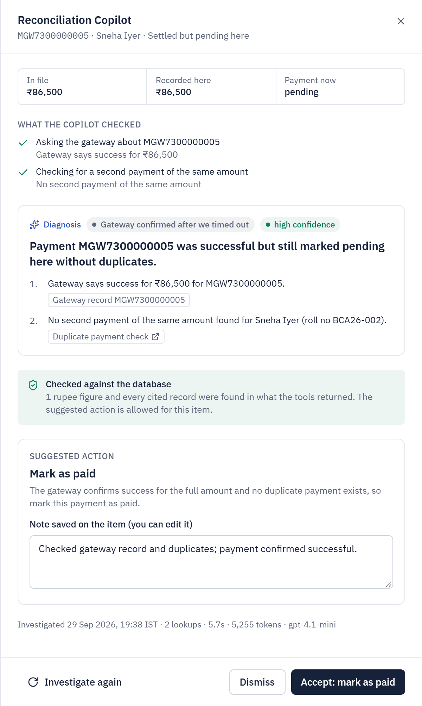
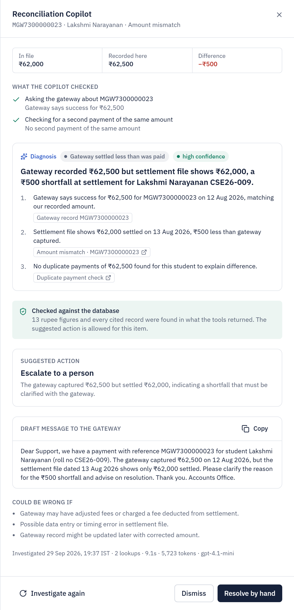
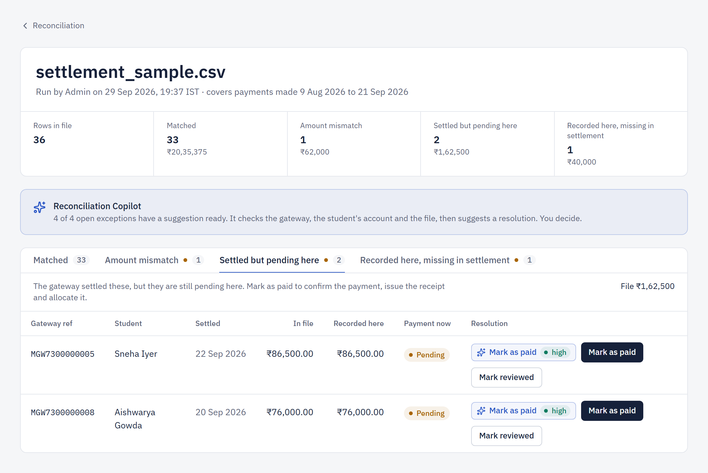
Code: lib/ai/recon-copilot/ (graph, tools, prompts, schema, verify), supabase/migrations/004_ai.sql (ai_investigations, save_ai_investigation, decide_ai_investigation), streaming route app/api/ai/recon-items/[id]/investigate, components/ai/copilot-drawer.tsx.
Problem. Questions like "who in second-year B.Com owes more than ₹50,000?" or "how did UPI collections compare with last week?" today need filters, exports and a spreadsheet.
What it does. A chat panel on every page. The answer leads with the number, shows a table whose rows open the student or payment, lists its sources, suggests follow-ups, and says how many figures were checked. The conversation carries over, so "only the BCA ones" or "how much do they owe in total?" work.
%%{init: {"flowchart": {"rankSpacing": 26, "nodeSpacing": 24, "wrappingWidth": 420, "padding": 8}, "themeVariables": {"fontSize": "17px"}}}%%
flowchart TB
Q["question + recent conversation"] --> A["agent
chooses tools, max 4"]
A <--> T["six typed read-only tools
search_students · get_student_account · collections
list_payments · fee_overview · reconciliation_overview"]
A --> C["compose
text · linked table · sources · follow-ups"]
C --> V["verify
every ₹ figure from a tool or the question
every reference exists"]
V -- "fails once: back to the agent" --> A
V -- "passes" --> OUT["answer, 'N figures checked'"]
V -- "fails again" --> W["answer with a warning"]
classDef sys fill:#F4F7FD,stroke:#C9D5F2,color:#16213A
classDef ok fill:#F1F8F5,stroke:#B9DCCB,color:#16213A
classDef wait fill:#FBF6EC,stroke:#E6D3A8,color:#16213A
classDef ext fill:#FBF6EC,stroke:#E6D3A8,color:#16213A
class Q,A,T,C sys
class V,W wait
class OUT ok
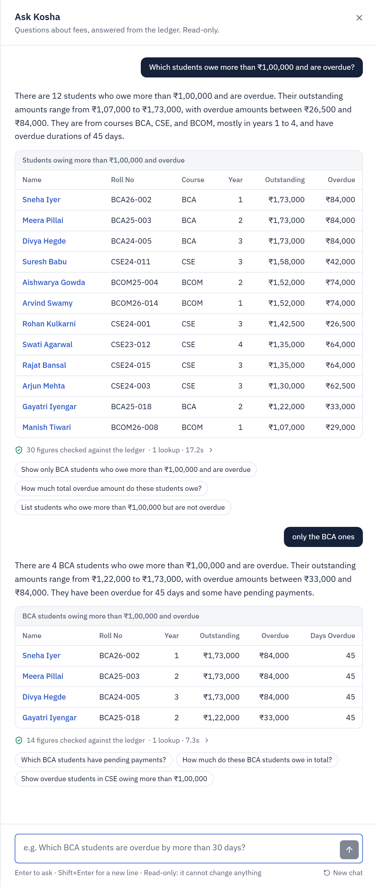
Code: lib/ai/ask/ (tools, graph, periods, schema, verify, prompts), route app/api/ai/ask, components/ai/ask-kosha.tsx.
Problem. Real settlement reports never use Kosha's four column names. They have "Txn Reference", gross, MDR, GST and net amounts, a payout UTR, a transaction date next to the settlement date, and DD/MM/YYYY 12-hour times. Retyping headers is slow and error-prone, and choosing the net amount would turn every card payment into a mismatch.
%%{init: {"sequence": {"actorMargin": 40, "messageMargin": 22, "boxMargin": 6}, "themeVariables": {"fontSize": "17px"}}}%%
sequenceDiagram
participant B as Browser
participant S as Server
participant O as OpenAI
B->>B: header is not Kosha's format
B->>S: header + 25 sample rows
S->>O: column names and examples
O-->>S: proposed mapping
S->>S: convert the sample with code
opt under 90% convert
S->>O: failures + formats that parse
O-->>S: corrected mapping
end
S-->>B: mapping and reasons
B->>B: convert the whole file, preview
Note over B: accountant checks, edits, confirms
B->>S: standard CSV + mapping note
S->>S: normal reconciliation
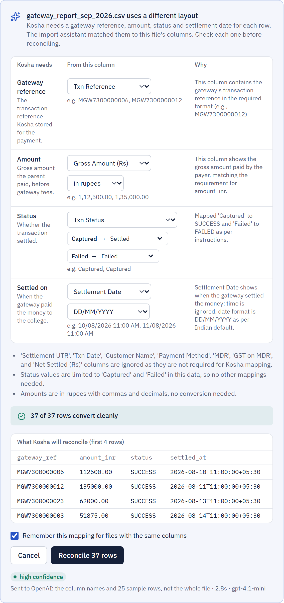
Code: lib/domain/settlement-mapping.ts (converter, pure and unit tested), lib/ai/settlement-mapper.ts (graph), route app/api/ai/settlement-mapping, components/reconciliation/smart-import.tsx. Sample: public/samples/gateway_report_sep_2026.csv.
Problem. Reminders and overdue notices are typed by hand, often in the parent's language, and a wrong amount in a fee message damages trust.
%%{init: {"flowchart": {"rankSpacing": 26, "nodeSpacing": 24, "wrappingWidth": 420, "padding": 8}, "themeVariables": {"fontSize": "17px"}}}%%
flowchart TB
L["student's ledger"] --> F["facts, in code
amounts · due dates · installments · receipt · key figure"]
F --> W["write, by the model
English / ಕನ್ನಡ / हिन्दी · WhatsApp / email
plus an English version"]
W --> C["checks
ledger amounts · key amount · ₹ digits
script · no gender · length"]
C -- "fails once" --> W
C --> E["staff review and edit
checks re-run on every edit"]
E --> CP["Copy · Kosha never sends"]
E -.-> AU["log_message_draft() · audit"]
classDef sys fill:#F4F7FD,stroke:#C9D5F2,color:#16213A
classDef ok fill:#F1F8F5,stroke:#B9DCCB,color:#16213A
classDef wait fill:#FBF6EC,stroke:#E6D3A8,color:#16213A
classDef ext fill:#FBF6EC,stroke:#E6D3A8,color:#16213A
class L,F,W sys
class C wait
class E,CP,AU ok
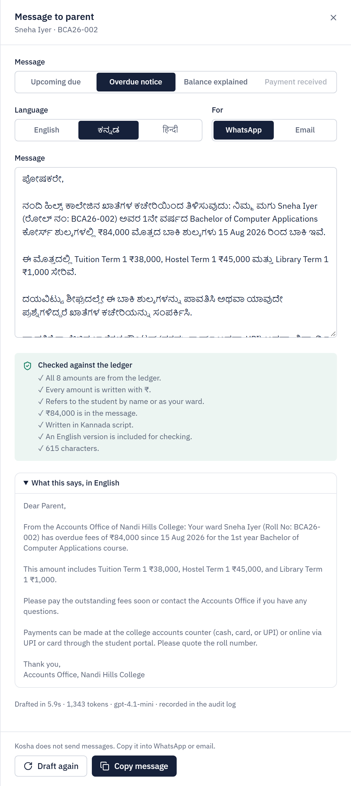
Code: lib/ai/parent-message/ (facts, draft graph, verify), route app/api/ai/parent-message, supabase/migrations/005_ai_messages.sql, components/ai/parent-message-drawer.tsx.
Problem. The dashboard shows everything; an accountant arriving in the morning needs to know what to do first.
%%{init: {"flowchart": {"rankSpacing": 26, "nodeSpacing": 24, "wrappingWidth": 420, "padding": 8}, "themeVariables": {"fontSize": "17px"}}}%%
flowchart TB
C["collect, in code
8 signal detectors with severity"] --> P["compose, by the model
pick 3 · headline · one reason each"]
P --> R["review
real signals · own actions
figures from that signal"]
R -- "fails once" --> P
R -- "passes" --> SV["save_ai_brief(), once a day"]
R -- "fails again, or no AI" --> RB["rules brief: top 3 by severity"] --> SV
SV --> UI["dashboard card
'ledger changed' check"]
classDef sys fill:#F4F7FD,stroke:#C9D5F2,color:#16213A
classDef ok fill:#F1F8F5,stroke:#B9DCCB,color:#16213A
classDef wait fill:#FBF6EC,stroke:#E6D3A8,color:#16213A
classDef ext fill:#FBF6EC,stroke:#E6D3A8,color:#16213A
class C,P sys
class R,RB wait
class SV,UI ok
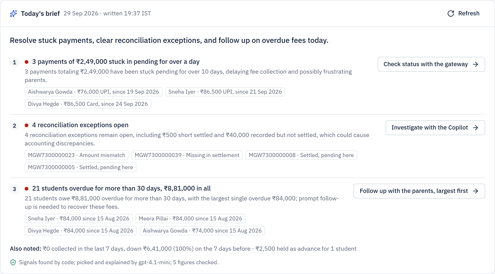
Code: lib/ai/brief/ (signals, brief graph), lib/data/brief.ts, route app/api/ai/brief, supabase/migrations/006_ai_brief.sql, components/ai/daily-brief.tsx.
Two layers. Unit tests cover every deterministic part (verifiers, date periods, the settlement converter, the signal detectors), including the failure cases the verifiers exist to catch: a made-up amount, an unknown evidence id, a forbidden action, an undisclosed duplicate, an amount written in words or Kannada digits, a gendered word in Hindi. Evaluations (npm run eval:ai) run the real model on cases whose right answer is known, with the answer computed independently from the database, not by the feature's own tools.
| Evaluation | Cases | Result |
|---|---|---|
| Reconciliation Copilot | Settled but pending → mark as paid; ₹500 shortfall → never mark as paid, cause "settlement short", gateway message mentions ₹500; missing → never mark as paid, file searched; staged double payment → possible duplicate, not marked paid. | 4/4 |
| Ask Kosha | Number of overdue students; college-wide overdue total; the top debtor (with ties); last week's collections; everyone with a pending payment; a two-turn follow-up; refusing to delete a payment. | 8/8 |
| Smart import and messages | The gateway layout (gross, settlement date, reference, DD/MM/YYYY); a layout in paise with ISO dates and no status column; four messages in Kannada, Hindi and English for WhatsApp and email. | 6/6 |
| Daily brief | The demo ledger; a busy day where stuck payments and a shortfall must lead, not the advance; a quiet day with no invented urgency. | 3/3 |
The evaluations found real problems: a duplicate check blind to a payment made 8 days later, "last week" meaning two different weeks, a tie cut to one student, YYYY/MM/DD chosen for dashed dates, and "who owes the most?" answered from only the DUE students, with correct figures that the verifier passed. The verifier catches invented numbers; the evaluations catch wrong interpretations. All are fixed and logged in AI_LOG.md.
All features use gpt-4.1-mini at temperature 0, with a 45-second timeout and two retries (set by OPENAI_MODEL). Each use records its token count.
| Feature | Typical time | Tokens per use | Notes |
|---|---|---|---|
| Copilot, one exception | 6 to 8 s | 5,000 to 6,000 | 2 to 3 tool calls, streamed live. |
| Ask Kosha, one question | 4 to 8 s | 5,000 to 8,000 | Up to 17 s for long tables. |
| Smart import | about 3 s | about 1,600 | Once per new layout. |
| Message to a parent | 2 to 6 s | 1,300 to 2,000 | Includes the English version. |
| Daily brief | about 4 s | about 1,200 | Once a day. |
Drafted only from the entries in AI_LOG.md (30 entries, written as the work happened; entries 15 to 30 cover the AI features). Highlighted text is for the candidate to complete in their own words.
Claude Code (Anthropic's coding agent, model Claude Opus 5.5), running in the Claude desktop app with access to the project folder, a shell, a browser pane and Playwright. [Darshan: confirm, and add any other tools you used]
I wrote a detailed project brief (stack, domain rules, design system, phases with a definition of done for each) and asked the assistant to build it phase by phase: database schema, money functions and seed; domain layer, API and tests; design system and screens; payments, receipts and reconciliation; end-to-end tests, README and this document. After each phase I reviewed the result and approved the next. [Darshan: add your own words on how you directed and reviewed the work]
[Darshan: add the prompt you found most useful, for example the brief's rule "the database is the source of truth for all money rules; every money-changing operation is a single PostgreSQL function", or the instruction to log every mistake in AI_LOG.md]
Most of the code was generated by the assistant from the brief: the SQL migrations and functions, the seed, the domain functions and their tests, the API routes, the components and pages, the Playwright tests and the documentation build. [Darshan: state the proportion in your own words]
[Darshan: list what you changed or decided yourself, e.g. choices you made at the phase reviews]
| What was wrong | How it was identified | How it was fixed |
|---|---|---|
Seed payment dates only took 4 distinct values ((i*11) % 44). | Grouping payments by day in a dry run on an in-memory Postgres. | Coprime step (i*17) % 45; re-verified. |
| Row types clashed with supabase-js inference (embedded relations typed as arrays). | npm run typecheck errors. | Query helper returns the row type declared at the call site. |
| Payment search ORed across an embedded table, which PostgREST cannot do. | Re-reading the query before running it. | Match students first, then OR on ids. |
| Cached demo-student id would go stale after a reset. | Self-review of the reset route. | Cache removed. |
| Awkward audit sentences and "already success" error text. | Reading API smoke-test output. | Rewrote the copy; "₹" instead of "Rs" in SQL messages. |
| Tailwind opacity modifiers on CSS-variable colours generated nothing. | Self-review before the first screenshot. | RGB channel variables with <alpha-value>. |
| Dates rendered "24 Sept 2026", then "05 Jan 2027". | Dashboard screenshot; then a new unit test. | Fixed month names, unpadded day. |
| Layout issues: misaligned fee-head bars, approver in the monospaced column, phone overflow, a sentence entirely red, a redundant advance sentence, a palette loading flash. | Reading 1440 px and 390 px screenshots. | Fixed column, secondary line, phone layouts, split sentence, prefetch. |
| Invisible combining characters in a regex after a scripted edit. | An odd diff line, confirmed with od -c. | \p{Diacritic}. |
| Select chevron written as a Tailwind class containing spaces, so no dropdown showed its arrow. | A Playwright locator error printed the split classes. | Moved to a CSS class. |
| Toasts covered the drawer's submit; weak selected state; truncated "Bank transfer"; receipt spilled onto a second page; an ALL-CAPS title against the brief. | Screenshots, a PDF render of the receipt, re-reading the brief. | Toasts bottom-left, ink fill for selection, 2×2 on phones, tighter print spacing, sentence case. |
| Test scripts waited on the wrong signal or read the wrong element, reporting failures in working features. | Results contradicted the screen; checked through the API. | Wait for the specific toast or dialog; filter alerts by text. |
| Dashboard: duplicated open items after a repeated upload, overflowing badge, mismatched counts, a smoothed trend line, a blank chart in one capture. | Reading dashboard screenshots. | De-duplication, short labels, clear counts, straight segments, initial chart size. |
| Copilot findings cited the exception itself; a search tool called 36 rows "similar" because references are sequential. | Reading the first live investigations. | Evidence ids for every check; near-identical reference counts only with the same amount. |
| The duplicate-risk check accepted "no duplicate"; the duplicate search looked only 7 days back, and the eval passed anyway. | A unit test; the eval's summary table said pass: false. | Risk must be in risks or next steps; any later same-amount payment counts; stricter eval judge. |
| A LangGraph node named like a state field (twice, in AI-2 and AI-3). | The graph refused to compile on the first call. | Renamed; every graph checked. |
| "Last week" meant two different weeks on the same day; a follow-up total added up by the model; a tie cut to one student; placeholder cells. | UI screenshots and the Ask Kosha eval. | Date ranges resolved in code; failed checks go back to the tools; ties kept; per-group comparisons. |
| "Who owes the most?" answered from the DUE students only, with correct figures. | The full eval run (7/8), then asking three times. | Filter description rewritten; 8/8 twice. |
| The import sample missed the only "Failed" row; a wrong day/month choice converted without errors; YYYY/MM/DD chosen for dashed dates twice. | Reading the proposal, a unit test, the AI-3 eval. | Sampling covers every status value; ambiguity confirmation; retry told which formats parse. |
| Drafted messages guessed gender ("your daughter", "आपके पुत्र"); early briefs used alarmist wording. | Reading the drafts and the first brief. | Gender rule plus a check in three languages; calmer prompt and a quiet-day eval. |
[Darshan: add anything you caught yourself during review that is not in the log]